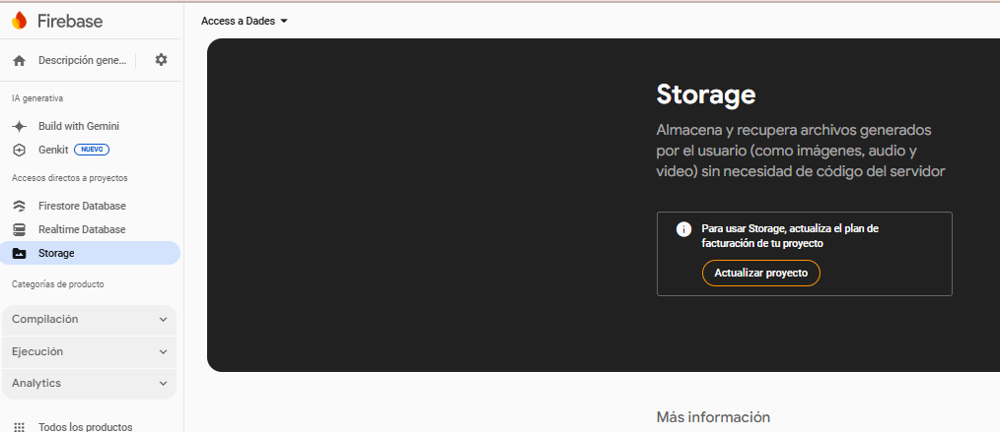
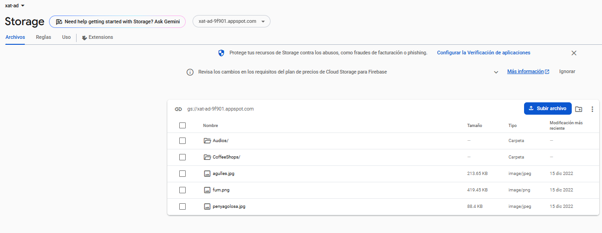
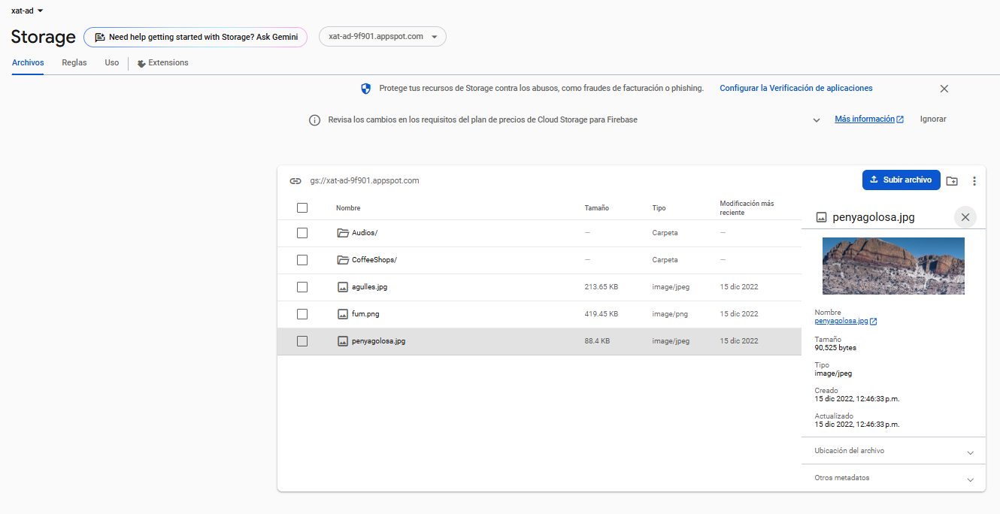
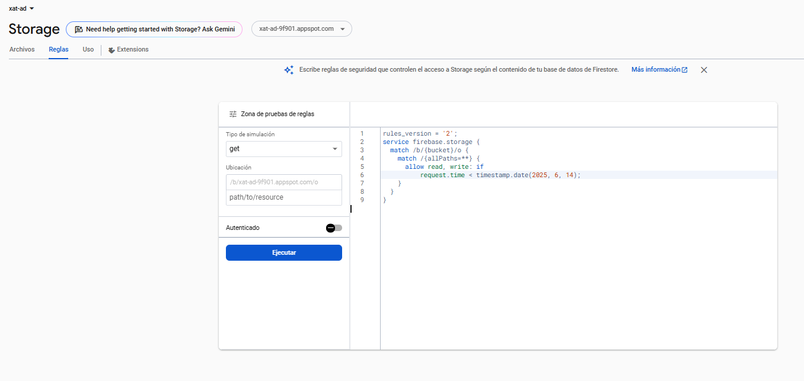
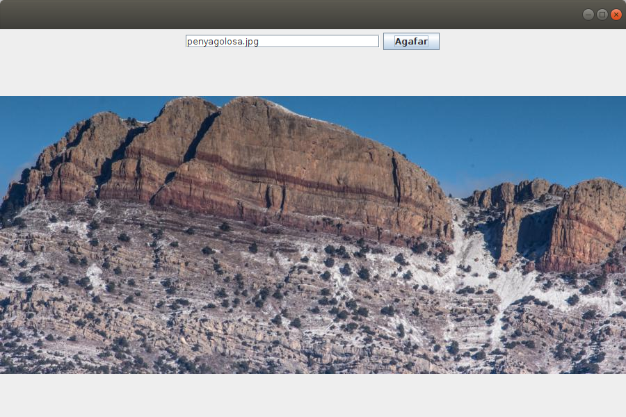
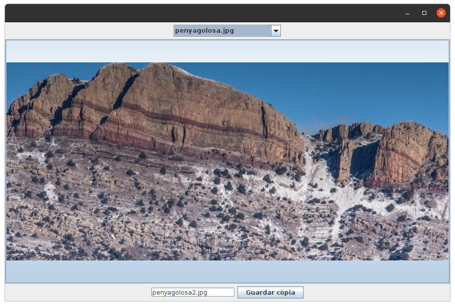

4.5 - Cloud Storage
Cloud Storage ens permet guardar fitxers còmodament: fotos, vídeos, audios, ...
Combinat amb Reltime Database o Cloud Firestore ens permet guardar les nostres dedes de forma eficient, ja que podem guardar en les primeres les referències als fitxers que pugem al Storage.
La utilització d'estoratge no és de gratis, per la qual cosa els exemples d'aquest apartat es faran sobre una base de dades externa (la mateixa que la de l'exercici 2) on sí que tindreu accés.
Necessitareu el fitxer de connexió d'aquesta base de dades al que teniu com un recurs en l'aula virtual: xat-ad-9f901-firebase-adminsdk-f1vja-b8957819d1.json

4.5.1 CS: Utilització des de l'entorn
L'entorn que ens ofereix Firebase per a gestionar Cloud Storage és molt senzill i no té cap secret, ja que ens permetrà pujar els fitxers, organitzant-los en subdirectoris, i també esborrar-los. En principi no necessitem més.

Si punxem en un fitxer podrem veure les seues característiques, i si el seleccionem podrem esborrar-lo o obrir-lo en una altra finestra.

Aquest entorn, de tan senzill, fins i tot es queda un poc curt, ja que no ens permetrà canviar el nom d'un fitxer, o moure'l a una carpeta, ...
Si vulguérem fer algun canvi d'aquestos, canviar el nom o canviar de carpeta, ho hauríem de fer des d'un altre lloc, un altre navegador del Google Cloud Storage (https://console.cloud.google.com/storage/browser):

on es pot observar com en els 3 puntets de la dreta d'un fitxer ens apareixen moltes opcions com copiar, menejar, renomenar, ...
Però nosaltres en principi tindrem prou amb la primera consola. Anem alerta de col·locar les coses al lloc, i si no estan, esborrem i col·loquem al lloc correcte.
Ja que estem en la consola, controlem els permisos (Rules) en la pestanya corresponent de la consola:

En aquesta imatge s'aprecia que no hi haurà permís per a llegir ni escriure fora de la consola. Com que el que volem és accedir des de les aplicacions d'IntelliJ i d'Android, substituirem el permís per aquest:
allow read, write: if request.time < timestamp.date(2025, 6, 14);
amb una data en la qual no ens pillem els dits.

Nota
Observeu com tant en la consola senzilla com en la del browser de GoogleCloud, ens posa una adreça, que en el meu cas és: gs://xat-ad-9f901.appspot.com. Es tracta de l'adreça del bucket (poal, contenidor) on estan col·locats els fitxers. Podem crear més buckets, però no ho complicarem. Haurem de tenir clara la referència a aquest bucket per defecte.
4.5.2 CS: Utilització des de IntelliJ
Exemple
Practicarem tot el que ve a continuació sobre un programa gràfic. Serà molt més senzill que en els casos anteriors, ja que de moment només volem un lloc on tenir el nom de la imatge que volem baixar, i un lloc on visualitzar la imatge
Aquest és el seu esquelet. Guardeu-lo en un fitxer anomenat Exemple_8_5_1_FirebaseCS_AgafarImatge.kt :
import javax.swing.JFrame
import java.awt.EventQueue
import javax.swing.JTextField
import javax.swing.JButton
import javax.swing.JLabel
import java.awt.BorderLayout
import javax.swing.JPanel
import java.awt.FlowLayout
import java.io.FileInputStream
import com.google.firebase.FirebaseOptions
import com.google.auth.oauth2.GoogleCredentials
import com.google.firebase.FirebaseApp
import com.google.cloud.storage.Bucket
import com.google.firebase.cloud.StorageClient
import javax.imageio.ImageIO
import java.nio.ByteBuffer
import java.io.ByteArrayInputStream
import javax.swing.ImageIcon
class AgafarImatge_1 : JFrame() {
val nomIm = JTextField(25)
val boto = JButton("Agafar")
val foto = JLabel()
var bucket: Bucket? = null
init {
defaultCloseOperation = JFrame.EXIT_ON_CLOSE
setBounds(100, 100, 900, 600)
setLayout(BorderLayout())
val panell1 = JPanel(FlowLayout())
panell1.add(nomIm)
panell1.add(boto)
getContentPane().add(panell1, BorderLayout.NORTH)
getContentPane().add(foto, BorderLayout.CENTER)
boto.addActionListener { agafar() }
}
fun agafar() {
// Instruccions per agafar la imatge
}
}
fun main(args: Array<String>) {
EventQueue.invokeLater {
AgafarImatge_1().isVisible = true
}
}
4.5.2.1 CS-IntelliJ: Connexió
Configuració
No caldrà fer referència a la URL de l'aplicació Firebase, perquè quan especifiquem el bucket, li posarem l'adreça i amb això és suficient.
Recordeu que ens vam baixar un fitxer json amb la clau privada que vam guardar a l'arrel del projecte (i del qual és molt convenient guardar còpia).
val serviceAccount = FileInputStream("xat-ad-9f901-firebase-adminsdk-f1vja-b8957819d1.json")
val options = FirebaseOptions.Builder()
.setCredentials(GoogleCredentials.fromStream(serviceAccount))
.build()
FirebaseApp.initializeApp(options)
Referència al bucket de Cloud Storage
Ací haurem de fer una referència explícita al bucket que vam comentar en el punt anterior, mentre que en Android ens el podrem saltar, ja que la referència estarà implícitament. Ho farem a través de StorageClient , mentre que en Android serà un altra classe.:
bucket = StorageClient.getInstance().bucket("xat-ad-9f901.appspot.com")
Nota
Podrém haver-ho definit diferent, especificant el bucket en el moment de definir les opcions. Aleshores, en el moment de crear el bucket no caldria passar-li el paràmetre.
val serviceAccount = FileInputStream("xat-ad-9f901-firebase-adminsdk-f1vja-b8957819d1.json")
val options = FirebaseOptions.Builder()
.setCredentials(GoogleCredentials.fromStream(serviceAccount))
.setStorageBucket("xat-ad-9f901.appspot.com")
.build()
FirebaseApp.initializeApp(options)
bucket StorageClient.getInstance().bucket()
4.5.2.2 CS-IntelliJ: Accés a les dades
Farem accés als fitxers de Cloud Storage per a llegir-los, per a baixar-los. Mencionarem el fet de guardar fitxers, però no l'utilitzarem tant.
Ho farem per mig del mètode get() del bucket , al qual li passarem el nom del fitxer que volem llegir, i ens tornarà un blob (de cloud storage) amb el seu contingut.
val blob = bucket?.get(nomIm.getText())
Aquest blob podrem agafar-lo de dues maneres:
- Baixant-lo a un fitxer temporal amb el mètode downloadTo()
- Agafant-lo directament en memòria a un ByteBuffer de grandària suficient
- Agafant-lo directament en memòria a un ByteArray amb el mètode getContent() i aleshores no cal especificar cap grandària (potser siga el més còmode)
De la primera manera ho faríem així, baixem el fitxer a un fitxer auxiliar, i des d'alli el carreguem
// Primera manera de llegir, amb un fitxer auxiliar
val f = File("auxiliar")
blob?.downloadTo(FileOutputStream(f))
val image = ImageIO.read(f)
foto.setIcon(ImageIcon(image))
De la segona manera ens muntem un reader (de Cloud Storage) per poder carregar-ho en memòria a un ByteBuffer
//Segona manera de llegir: muntant un reader per a carregar a un ByteBuffer
val im = ByteBuffer.allocate(1024 * 1024)
blob?.reader()?.read(im)
val image = ImageIO.read(ByteArrayInputStream(im.array()))
foto.setIcon(ImageIcon(image))
La tercera manera, segurament és la més còmoda, amb el mètode getContent() , que ens torna el ByteArray. P
//Tercera manera de llegir: amb getContent per a carregar a un ByteArray
val im = blob?.getContent()
val image = ImageIO.read(im?.inputStream())
foto.setIcon(ImageIcon(image))
Qualsevol de les tres maneres ens hauria de funcionar bé, col·locant juntament amb la definició del blob en la funció que s'executa en apretar el botó, agafar(). I aquest seria el resultat:

Altres mètodes del bucket que ens poden interessar són:
- get() : agafa un fitxer, passant-li el nom i tornant un blob. És el que hem utiitzat.
- create() : serveix per a pujar un fitxer al bucket; se li passen 3 paràmetres, el nom que tindrà el fitxer en el Clousd Storage, el contingut que se li pot passar en forma de ByteArray o de InputStream, i el tipus de fitxer (per exemple "image/png")
- list() : torna un conjunt de blobs en forma de Page
. De cada element blob podrem baixar-nos el contingut a un fitxer auxiliar, a un ByteBuffer, agafar el seu nom, ...
4.5.2.3 CS-IntelliJ: Tot l'exemple
Anem a ajuntar tot l'exemple que visualitza una imatge guardada en Cloud Storage, modificant-lo un poc:
- Ens guardarem els noms de les imatges en un JComboBox. I per a visualitzar la imatge, en compte d'un JLabel utilitzarem un JButton , així la imatge quedara centrada tan horitzontal com verticalment.
- Per a provar la pujada d'imatges, proposarem un segon nom a la imatge, i un botó. Si s'apreta es guardarà la imatge amb el nom proposat (o canviat), aprofitant l'extensió del nom per a posar el tipus d'imatge
El guardarem amb un altre nom, en el fitxer Kotlin Exemple_8_5_2_FirebaseCS_AgafarImatge.kt
import javax.swing.JFrame
import java.awt.EventQueue
import javax.swing.JComboBox
import java.awt.BorderLayout
import javax.swing.JPanel
import java.awt.FlowLayout
import java.io.FileInputStream
import com.google.firebase.FirebaseOptions
import com.google.auth.oauth2.GoogleCredentials
import com.google.firebase.FirebaseApp
import com.google.cloud.storage.Bucket
import com.google.firebase.cloud.StorageClient
import javax.imageio.ImageIO
import java.nio.ByteBuffer
import java.io.ByteArrayInputStream
import javax.swing.ImageIcon
import javax.swing.JButton
class AgafarImatge_2 : JFrame() {
val nomIm = JComboBox<String>()
val nomIm2 = JTextField(15)
val boto = JButton("Guardar còpia")
val foto = JButton()
var bucket: Bucket? = null
var im = byteArrayOf()
init {
defaultCloseOperation = JFrame.EXIT_ON_CLOSE
setBounds(100, 100, 900, 600)
setLayout(BorderLayout())
val panell1 = JPanel(FlowLayout())
panell1.add(nomIm)
getContentPane().add(panell1, BorderLayout.NORTH)
getContentPane().add(foto, BorderLayout.CENTER)
val panell2 = JPanel(FlowLayout())
panell2.add(nomIm2)
panell2.add(boto)
contentPane.add(panell2,BorderLayout.SOUTH)
val serviceAccount = FileInputStream("xat-ad-9f901-firebase-adminsdk-f1vja-b8957819d1.json")
val options = FirebaseOptions.builder()
.setCredentials(GoogleCredentials.fromStream(serviceAccount))
.build()
FirebaseApp.initializeApp(options)
bucket = StorageClient.getInstance().bucket("xat-ad-9f901.appspot.com")
val blobs = bucket?.list()
for (b in blobs!!.iterateAll())
nomIm.addItem(b.getName())
nomIm.addActionListener { agafar() }
boto.addActionListener { guardar() }
}
fun agafar() {
// Instruccions per agafar la imatge
val blob = bucket?.get(nomIm.getSelectedItem().toString())
//Tercera manera de llegir: amb getContent per a carregar a un ByteArray
im = blob!!.getContent()
val image = ImageIO.read(im?.inputStream())
foto.setIcon(ImageIcon(image))
val nom = nomIm.getSelectedItem().toString().split(".")
nomIm2.text = nom[0]+"2."+nom[1]
}
fun guardar(){
bucket?.create(nomIm2.text,im,"image/"+nomIm2.text.split(".")[1])
}
}
fun main(args: Array<String>) {
EventQueue.invokeLater {
AgafarImatge_2().isVisible = true
}
}
I aquest seria el resultat:

4.5.2.4 CS-IntelliJ: Exemple ampliat, combinant amb Cloud Firestore
Anem a fer un altre exemple, que serà el de CoffeeShops_Fragments, ja fet en el mòdul DI, i retocat en l'Annex d'Android, al qual vam incorporar una Base de Dades SQLite amb les dades (inclosa la imatge del cafè), i a la qual accedíem a través de la llibreria ROOM. -->Anem a fer un altre exemple. Des d'IntelliJ només ens plantegem accedir a Cloud Firestore i Cloud Storage per a agafar:
- De Cloud Firestore els documents de la col·lecció on està entre altres coses el nom de la imatge
- Amb aquest nom d'imatge anirem a Cloud Storage per a agafar-la
D'aquesta manera ens queda una pantalla molt senzilla, pràcticament com en l'exemple anterior, és a dir amb un JComboBox amb el nom de les imatges, que ara agafarem de Cloud Firestore, i un JButton per a mostrar la imatge.
Li posarem ara el nom de Exemple_8_5_3_FirebaseCF-CS_CoffeeShops.kt. El codi està simplificat al màxim, llevant tractament d'errors i opcions.
import javax.swing.JFrame
import java.awt.EventQueue
import javax.swing.JComboBox
import java.awt.BorderLayout
import javax.swing.JPanel
import java.awt.FlowLayout
import java.io.FileInputStream
import com.google.firebase.FirebaseOptions
import com.google.auth.oauth2.GoogleCredentials
import com.google.firebase.FirebaseApp
import com.google.cloud.storage.Bucket
import com.google.firebase.cloud.StorageClient
import javax.imageio.ImageIO
import java.nio.ByteBuffer
import java.io.ByteArrayInputStream
import javax.swing.ImageIcon
import javax.swing.JButton
import com.google.firebase.cloud.FirestoreClient
import com.google.cloud.firestore.Firestore
class CoffeeShops : JFrame() {
val nomCafe = JComboBox<String>()
val foto = JButton()
var bucket: Bucket? = null
var database: Firestore? = null
init {
defaultCloseOperation = JFrame.EXIT_ON_CLOSE
setBounds(100, 100, 900, 600)
setLayout(BorderLayout())
val panell1 = JPanel(FlowLayout())
panell1.add(nomCafe)
getContentPane().add(panell1, BorderLayout.NORTH)
getContentPane().add(foto, BorderLayout.CENTER)
val serviceAccount = FileInputStream("xat-ad-9f901-firebase-adminsdk-f1vja-ee7dc206de.json")
val options = FirebaseOptions.builder()
.setCredentials(GoogleCredentials.fromStream(serviceAccount))
.build()
FirebaseApp.initializeApp(options)
bucket = StorageClient.getInstance().bucket("xat-ad-9f901.appspot.com")
database = FirestoreClient.getFirestore()
// Exemple de listener de lectura contínua addSnapshotListener() sobre una col·lecció
// Per a posar tota la llista de missatges. Sobre /Xats/XatProva/missatges
database?.collection("CoffeeShops")?.orderBy("nom")?.addSnapshotListener { snapshots, e ->
for (dc in snapshots!!.getDocumentChanges()) {
nomCafe.addItem(dc.getDocument().getString("nom"))
}
}
nomCafe.addActionListener { agafar() }
}
fun agafar() {
//Primer agafem el nom de la imatge mirant el document que té el nom com el triat
//Després agafem la imatge amb eixe nom
database?.collection("CoffeeShops")?.whereEqualTo("nom", nomCafe.getSelectedItem())!!
.addSnapshotListener { snapshots, e ->
for (dc in snapshots!!.getDocumentChanges()) {
val blob = bucket?.get("CoffeeShops/" + dc.getDocument().getString("imatge"))
//Segona manera de llegir: muntant un reader per a carregar a un ByteBuffer
val im = ByteBuffer.allocate(1024 * 1024)
blob?.reader()?.read(im)
val image = ImageIO.read(ByteArrayInputStream(im.array()))
foto.setIcon(ImageIcon(image))
}
}
}
}
fun main(args: Array<String>) {
EventQueue.invokeLater {
CoffeeShops().isVisible = true
}
}
Llicenciat sota la Llicència Creative Commons Reconeixement NoComercial SenseObraDerivada 4.0